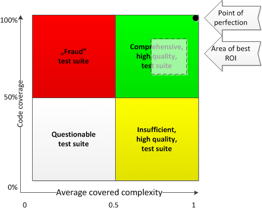
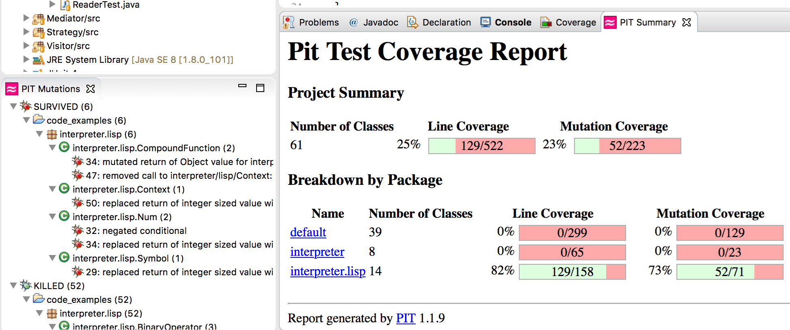

Unit Test Suite Quality Estimation
Introduction
This text presents a simple method to estimate the quality of a unit test suite that can give some insight into the subject beyond regular test coverage. All examples are given in Java.
Code Coverage Problem
Imagine a team of developers working on a software product. They write code and unit tests. They can present over 50% code coverage, but they are suspiciously conservative about any change always trying to mitigate the risk. That seems strange, since coverage over 50% is actually pretty good for application (not so much for a reusable library), and should provide considerable confidence during code changes. Not in this case though, because the problem lies not in quantity but in quality of tests.
The main problem with code coverage expressed in terms of percentage of executed statements is, that it does not equal to the coverage measured in term of exercised use cases. All it measures is the number of executed lines of code without taking into consideration whether anything gets actually verified. This limits the utility of this metric alone.
Definition of Quality
A high-quality test suite should give high confidence about how the code under test behaves. It should preferably encode all required behavior (expressed as use cases) of all delivered functionality so that every unwanted behavior gets automatically detected. This is the point of perfection. The rest of this text presents the extended metric that helps in monitoring the quality of the test suite.
Example
To illustrate the presented method, the following code under test is used throughout this text. The class generates odd numbers. The boolean property instructs the generator to emit only prime numbers.
public final class NumberGenerator {
private boolean primeNumbersOnly;
public NumberGenerator() {
this.primeNumbersOnly = false;
}
public boolean isPrimeNumbersOnly() {
return primeNumbersOnly;
}
public void setPrimeNumbersOnly(boolean primeNumbersOnly) {
this.primeNumbersOnly = primeNumbersOnly;
}
public List generateOdd() {
List result = new ArrayList<>();
for (int i = 1; i < 10; i += 2) {
if (this.primeNumbersOnly) {
if (isPrime(i)) {
result.add(i);
}
} else {
result.add(i);
}
}
return result;
}
private static boolean isPrime(int x) {
for (int i = 2; i < x; i++) {
if (x % i == 0) {
return false;
}
}
return true;
}
}
Additionally, to code under test, the following unit test suite is used throughout this text.
public class NumberGeneratorTest {
@Test
public void testConstruction1() {
NumberGenerator ng = new NumberGenerator();
assertNotNull(ng);
}
@Test
public void testConstruction2() {
try {
NumberGenerator ng = new NumberGenerator();
} catch(Exception e) {
fail();
}
}
@Test
public void testPrimeNumbersOnly() {
NumberGenerator ng = new NumberGenerator();
ng.setPrimeNumbersOnly(true);
assertTrue(ng.isPrimeNumbersOnly());
}
@Test
public void testGenerateOdd1() {
NumberGenerator ng = new NumberGenerator();
ng.setPrimeNumbersOnly(false);
List result = ng.generateOdd();
assertEquals(Arrays.asList(1,3,5,7,9), result);
}
@Test
public void testGenerateOdd2() {
NumberGenerator ng = new NumberGenerator();
ng.setPrimeNumbersOnly(false);
List result = ng.generateOdd();
assertEquals(Arrays.asList(1,3,5,7,9), result);
ng.setPrimeNumbersOnly(true);
result = ng.generateOdd();
assertEquals(Arrays.asList(1,3,5,7), result);
}
}
Quality Estimation
In order to determine the quality of the test suite, one needs to review both test cases and code under test. Preferably, the whole test suite should be reviewed, but in order to estimate an existing large test suite, one should gather enough samples to reason about the whole codebase (at least 100). During a rough inspection, every test case gets assigned three numeric values: verification ratio, use case coverage and covered complexity.
Verification Ratio
A verification ratio denotes whether the test actually verifies anything.
Value of 1 gets assigned to a test which verifies behavior of exercised code
(testPrimeNumbersOnly, testGenerateOdd1, testGenerateOdd1),
the value of 0 gets assigned to a test that merely runs the code
(testConstruction1 and testConstruction1).
There may be cases where things are not obvious at first glance.
In such situations, an arbitrary fraction number may be assigned
(remember, this is just estimation).
Use Case Coverage
Use case coverage expresses the number of all use cases the test should cover
to the actual number of exercised use cases. This parameter is tricky as it
requires looking through the entire suite (usually entire source file) to find
all exercised use cases for examined functionality. For example, if a function
under test accepts a single boolean parameter, the number of use cases is 2
(one for “true” value, and one for “false").
If the test exercises both (testGenerateOdd2), the value of
1 shall be assigned to this parameter. If the test exercises only
one (testGenerateOdd1), the value of 0.5 shall be assigned,
unless there is another test case that excesses the other value, then both cases
shall be assigned 1. The value of 0 shall be assigned
only when the value of verification ratio is 0, since tests that
do not verify anything do not cover any use cases either
(testConstruction1 and testConstruction2).
Since this is an estimation, a value of 0.5 can be assigned if only
a sunny day scenario is exercised (then the average error is then only 0.25).
Complexity Impact
Complexity impact is a rough estimation telling whether code under test contains
functionality worth testing. Value of 1 can be assigned to test case
for regular code that contains some algorithm – a condition, loop or sequence of
function invocations (testGenerateOdd2). Value of 0.1
shall be assigned to test cases exercising getters and setters and other functions
that merely copy variables (testConstruction1, testConstruction2,
testPrimeNumbersOnly). In rare cases, the value of 0 may
get assigned if it is difficult to determine whether the test actually runs the
code under test (sic!) or the test is redundant
(testGenerateOdd1 because it is a subset of testGenerateOdd2).
This parameter is very rough by nature, as there is plenty of freedom between
0.1 and 1.
Results
The result of the code review shall be a table containing 5 columns with assigned values.
Table 1. Review Results
| Test name | Verification ratio | Use case coverage | Complexity impact | Comment |
|---|---|---|---|---|
testConstruction1 | 0 | 0 | 0.1 | Does not verify anything |
testConstruction2 | 0 | 0 | 0.1 | Does not verify anything |
testPrimeNumbersOnly | 1 | 0.5 | 0.1 | |
testGenerateOdd1 | 1 | 0.5 | 0 | Redundant |
testGenerateOdd2 | 1 | 1 | 1 |
Average Covered Complexity (ACC)
Average covered complexity gets calculated as the average of products of all three parameters of all examined test cases.
ACC = AVERAGE(verification ratio(i)* use case coverage (i)* complexity impact(i))
where i = 1 to number of reviewed tests.
The following table presents the value for example suite in the bottom right cell (value 0.21).
Table 2. Test Suite Quality Metrics
| Test name | Verification ratio | Use case coverage | Complexity impact | Comment | Covered complexity |
|---|---|---|---|---|---|
testConstruction1 | 0 | 0 | 0.1 | Does not verify anything | 0 |
testConstruction2 | 0 | 0 | 0.1 | Does not verify anything | 0 |
testPrimeNumbersOnly | 1 | 0.5 | 0.1 | 0.05 | |
testGenerateOdd1 | 1 | 0.5 | 0 | Redundant | 0 |
testGenerateOdd2 | 1 | 1 | 1 | 1 | |
| AVERAGE | 0.6 | 0.4 | 0.26 | 0.21 |
Values close to 1 mean that the test suite concentrates on
complex non-trivial functionality. Such a test suite provides confidence
for the software team. On the other hand, values close to 0 indicate
that the suite does not verify much concentrates on trivial functionality or does
not fully exercise all possible use cases (or all of them combined).
Code coverage and average covered complexity combined provide insight into the quality of test suite that has been summarized in Figure 1.

The interpretation of the diagram is as follows:
- Both parameters over 0.5 or 50% (green quadrant) denote a suite that covers most of the relevant complex use cases of code under test; this is a desirable situation.
- Code coverage under 50% and average covered complexity over 0.5 (yellow quadrant) denotes a suite of good quality but insufficient quantity (a lot of functionality hasn’t been covered at all, but the covered functionality is thoroughly exercised); this situation happens when tests have been abandoned during development process or are being written after fact, usually as a prerequisite for refactoring; in order to move the suite to green quadrant, more tests need to be written to cover the remaining parts of functionality.
- Code coverage over 50% and average covered complexity under 0.5 (red quadrant) denote a “fraud” test suite that was created only to fool code coverage metric; such suite shall be deleted.
- Both parameters under 0.5 or 50% (grey quadrant) denote that the existence of the test suite itself is questionable; such a suite shall be refactored or deleted.
A point of perfection is a guiding light for test suite but reaching it is rarely possible or desirable (it is usually too expensive). The test suite that provides the highest return of investment is usually placed somewhere within a light green quadrant usually leaning towards higher average covered complexity than code coverage. In this case, all non-trivial functionality gets exercised by the test suite.
Additional Metrics
In order to give even more insight into the problem, additional metrics can be calculated:
- Average verification ratio – shows what percentage of test cases actually verify something; low values (0.61 in the example) mean that many test cases just run code under test
- Average use case coverage – shows the ratio of use cases exercised by tests; low values (0.4 in the example) mean that tests are not exhaustive
- Average complexity impact– shows the average verified complexity of covered code; low values (0.26 in the example) mean that test suite concentrates on trivial functionality that is unlikely to misbehave
Refactoring for Quality
The described method can be used to guide the refactoring of a test suite to
improve quality. The refactoring starts with the removal of all tests with 0
verification ratio as they do not serve any purpose. Then all tests with
complexity impact of 0.1 shall be removed as well as they have
little utility. Performing these two steps causes code coverage to drop down
showing functionality uncovered by test suite. After that, all tests with use
case coverage less than 1 shall be improved, and new quality tests shall be written.
Automation
The presented method can be automated to some extent. If the programming language supports annotations, a special one can be developed to keep parameters assigned to every test case along with the test case as presented in the following code snippet.
@Test
@Quality(verificationRatio = 1, useCaseCoverage = 0.5, complexityImpact = 0.1,
comment="Tests trivial assignment.")
public void testPrimeNumbersOnly() {
NumberGenerator ng = new NumberGenerator();
ng.setPrimeNumbersOnly(true);
assertTrue(ng.isPrimeNumbersOnly());
}
The test case evaluation can be part of regular code reviews and code coverage tools can be extended to calculate aggregated metric during test suite execution.
NOTE: A jar file containing @Quality annotation and an Apache Ant task calculating described metrics is available here.
Rapid ACC estimation
The method presented above is time consuming. In order to estimate Average Covered Complexity quickly, one can use mutation testing system (like pitest.org). Mutation testing involves modifying a code under test in various, small ways. Each mutated version is called mutant. Each mutant is then executed under unmodified test suite. If the test suite fails then the mutant is killed, otherwise the mutant survives which means the test suite is not able to detect altered behavior. The mutation testing system reports all survived and killed mutations as depicted in Figure 2.

A high “survived-to-killed” ratio (over 1) denotes low ACC as many use cases do not get exercised. A low “survived-to-killed” ratio (below 1, eg 30/168 = 0.178) denotes high ACC, which means high quality test suite (“survived-to-killed” is kind of opposite to ACC). The weakness of this method is that low “survived-to-killed” ratio does not take test suite redundancy into account so in extreme cases ACC can be actually closer to 50% due to many redundant tests present.
Conclusion
The presented combined metrics (code coverage and average covered complexity) provide some qualitative insight into the quality of a test suite, but it is important to note, that average covered complexity is just a rough estimate that may vary considerably. It is only representative if the set of examined test cases is representative of the entire suite and depends on the examiner’s arbitrary estimates of particular test cases. Nevertheless, both metrics combined give a better picture of test suite quality than code coverage alone.
An example spreadsheet has been attached to this article.